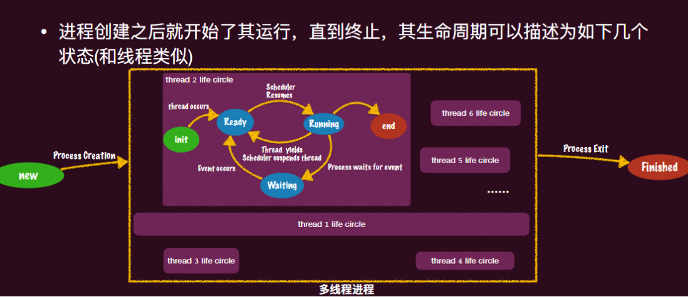
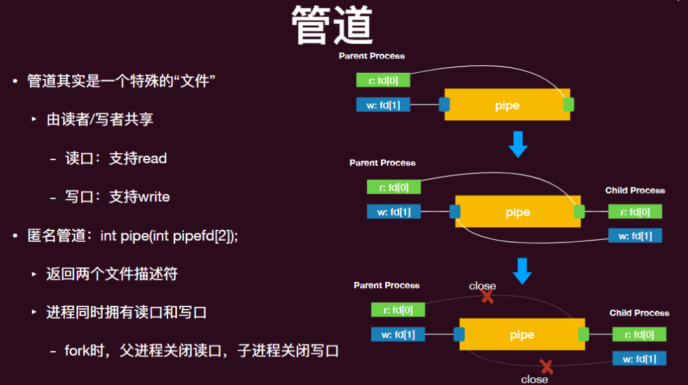
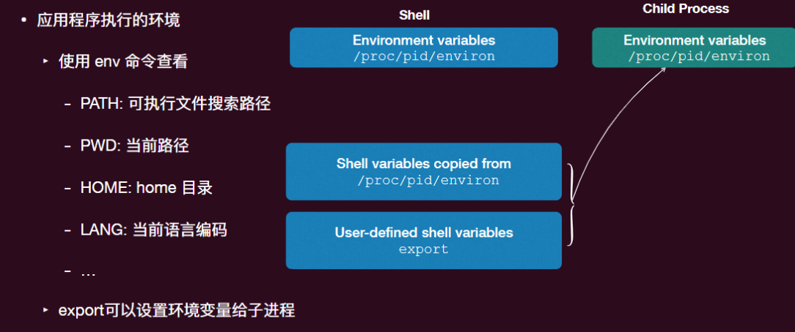
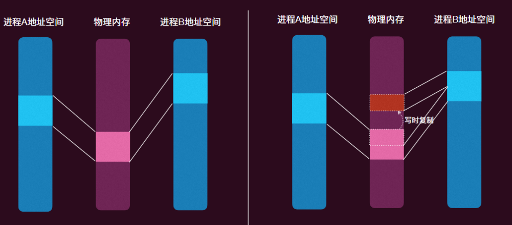
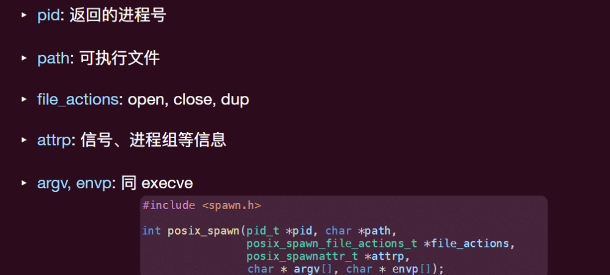

操作系统-09虚拟化-进程管理
进程的概念
- 拥有独立地址空间的运行实体，可以包含一个或多个线程
进程控制块：类似线程控制块 TCB，进程也需要一些元信息，用来描述（抽象）进程，方便操作系统管理，即进程控制块（Process Control Block）
进程树：
- ⼀个进程是被某个进程所创建的，⼀个进程也可以创建多个进程
- 因此操作系统的进程可以构成⼀个进程树（Process Tree），其中⽗进程节点指向其所创建的⼦进程
- linux 下可以通过命令
pstree得到当前进程树
第一个进程 init
- CPU reset -> Firmware 代码执⾏ -> 加载操作系统并初始化 -> 加载第⼀个进程
- init 进程加载完之后，操作系统已经完成了所需要资源的管理，并“躺”在后台等待用户命令 syscall 或者中断的发生
进程的生命周期：

终⽌之后的进程的“资源”会被操作系统回收，并通知其⽗进程其终⽌状态
- 通知？
- PCB 中⽗进程含有指针指向⼦进程 PCB，如果进程终⽌之后连 PCB 也都被回收，那么该指针就会指向⼀个“已经”被释放的内存 （Dangling pointers）
- 已终⽌但其 PCB 信息还没被回收的进程被称为“僵⼫进程”（Zombie process）
- ⽗进程调⽤ wait 系统调⽤会得到⼦进程的退出通知（⼦进程退出前会阻塞⽗进程）和其退出状态，同时移除该⼦进程的 PCB
但并不是每个⽗进程都⽼⽼实实的 wait ⼦进程的，其完全可能在⼦进程终⽌ 前就终⽌了：这时的⼦进程是没有⽗进程的！
- 该状态下（没有⽗进程）的进程被称为“孤⼉进程”（Orphan Process）
- linux 会让 init 进程重新接管这些孤⼉进程，从⽽能够在这些孤⼉进程终⽌ 时回收 PCB 资源
进程最重要的三类系统调用
- fork - 进程的创建
- execve - 进程的改变
- exit - 进程的删除
fork
fork 系统调用
创建一个新的（子）进程
- 通过做一份当前进程完整的复制（内存、寄存器现场）
- 子进程和⽗进程会各⾃独⽴地继续执⾏ fork 之后的指令
如何区分父子进程
- fork 的返回值不同: ⼦进程返回 0, ⽗进程返回⼦进程的 process ID
- fork 出错会返回 -1
fork 的行为
- 立即复制状态机：包括所有信息的完整拷贝
- 每一个字节的内存
- PCB 里的信息
- 注意，不只是地址空间的对象被复制了，PCB ⾥的对象，如打开的⽂件描述符号也被⼀并复制
文件描述符
- ⼀个指向操作系统内对象的 “指针“
- 对象只能通过操作系统允许的方法访问
- 从 0 开始编号 (0, 1, 2 分别是 stdin, stdout, stderr)
- 可以通过 open 取得；close 释放； dup 复制；
- 对于数据⽂件，⽂件描述符会 “记住” 上次访问⽂件的位置
事实上，由于存在⽗⼦进程存在⼤量的共享，会造成很多不确定性，真实系统的 fork 的背后的实现是复杂的
- ⽐如⽗⼦进程之间的 process id 是不同的，进程的 parent process id 也是不同的
- ⽐如，多线程的进程进⾏ fork 时，只有⼀个线程被复制，就是那个调⽤ fork 的线程
fork 应用：
- 给进程创建“快照”
- 主进程 crash 了，启动快照重新执⾏： 有些 bug 可能调整⼀下环境就消失了 (⽐如并发)
execve
很多时候，⽗⼦进程并不是同样的逻辑，⼦进程有⾃⼰的逻辑，⽐如 shell 创建进程并不是为了⼦进程也是⼀个 shell，⽽是“加载”某个可执⾏⽂件进⾏运⾏
- execve 就是这样的系统调⽤
int execve(const char *pathname, char *const argv[], char *const envp[])- 其参数中，pathname 是要加载的可执⾏⽂件具体的路径，argv 进程执⾏ 所需要的参数（main 函数同款参数）， envp 是环境变量
execve 行为
语义：将当前进程重置成⼀个可执⾏⽂件描述状态机的初始状态
- 加载 pathname 指定的可执⾏⽂件（数据段、代码段）
- 重新初始化堆和栈
- PCB 中相应的 memory mappings 也会改变
- 将 PC 寄存器设置到可执⾏⽂件代码段定义的⼊⼝点，该⼊⼝点最终会调⽤ main 函数
demo
1 | |
PCB 中的文件描述符呢？

普通文件：
- 在地址空间⾥有⼀个相应的 file 变量索引，但你的⼦进程重置了整个地址空间，因此那个⽂件描述符对应的 file 变量也没有了，此时你⽆法 close 这个⽂件了
- 这会造成资源的泄漏，当然这些资源（PCB）都会随着进程的终⽌⽽最终被回收，但在运⾏期间还是有⼀些资源的损耗
- 可以在创建⽂件时增加⼀个选项 FD_CLOEXEC：close on exec
环境变量

写时复制 COW
fork 后⾯往往跟着 execve 来加载⼦进程，那么 fork 的过程还必要吗？
- 事实上，早期的 fork 就是这么⽆脑的复制⽗进程的⼀切，但⼈们发现这个过程是低效的：
- 有些内存是只读的 (read-only)，⽐如代码段、共享代码库 (libc)，这些没必要复制
- 此外，⽴即执⾏ execve 会加载新的可执⾏⽂件，重置地址空间，因此，之前的内存拷⻉完全没有意义
-> 写时拷⻉
- 即两个进程共享同⼀份物理内存
- 只有当⼀个进程尝试去写这个物理内存时才会真正在物理内存中复制⼀份副本⽤来给这个进程去写
- 问题是，写⾃⼰的内存是⼀个“⽤户态”事件，内核⼜怎么知道呢？
- 标记这个共享的内存为“只读”，⼀旦发⽣“写”操作会发⽣权限错误陷入内核，操作系统获知这是⼀个 COW 事件，复制内存

posix_spawn 接口
- 创建进程的 API，结合了 fork+execve

exit
除了创建进程外，进程也需要能够终⽌：清理其所占内存空间（包括代码区、堆、栈），这个过程需要系统调⽤来做
- 因为进程这个“实体”就是操作系统抽象出来的，没有操作系统，进程就是⼀ 连串的指令流，没有终⽌的概念（CPU 只会不断的进⾏取指-执⾏的循环)
Linux 中，进程⼀般有 5 种退出机制
- 正常退出： 从 main 函数返回，调⽤库函数 exit，调⽤_exit
- 异常退出：调⽤ abort，由信号终⽌
void exit(int status) C 标准库函数，最常用的进程退出函数
- 调⽤ atexit () 注册的函数；使得我们可以指定在程序终⽌时执⾏⾃⼰的清理动作。(atexit () 最多可以注册 32 个函数，调⽤顺序与注册顺序相反)
- 关闭所有打开的流 (stdio)，这将导致写所有被缓冲的输出
- 移除所有的临时⽂件
- 最后调⽤_exit () 函数终⽌进程
return from main()
- 从 main 函数返回是最常⻅的终⽌⽅式
- main 函数的返回值和调⽤ exit () 的传⼊参数 int status 是同样的语义
- 0 是函数是符合预期终⽌，⾮ 0 是函数出现了错误终⽌
_exit()
- 所有属于这个进程的⽂件描述符都会被关闭
- 所有该进程的⼦进程都会被 init 进程接管
- 向该进程的⽗进程发送 SIGCHLD 信号，通知该⽗进程其已经终⽌
- 注意：_exit () 只会终⽌当前的线程，但 libc 做了⼀层 wrapper，其实真实调⽤ exit_group ()，关闭所有线程
异常退出
abort() 系统调⽤会导致系统异常终⽌
- atexit 注册的函数不会调⽤
- io 流不会关闭
- 其⾏为就是产⽣⼀个 SIGABRT 信号发送给调⽤ abort () 的进程，然后改进程就会异常终⽌
- 不会被 ignore 掉
信号 Signal
Linux 操作系统提供了⼀种可以通知进程发⽣了某个事件的机制：信号（Signal），注：不要和并发的 singal 原语混淆，也不要和“信号量”（Semaphore）混淆
其本质上是对中断的模拟, 命令 kill -l 可以查看有多少信号， man 7 signal 查看信号的具体信息
- 发生某个中断事件后，⽤户程序也想获知并处理（⽽不只是在内核态由操作系统透明的处理）
signal 函数可以注册信号处理函数，只要传⼊相应的信号和函数名即可
- handler 设为 SIG_IGN 时表示忽略这个信号，⽐如 signal (SIGCHLD, SIG_IGN) 就表示忽略掉⼦进程的终⽌信号，此时⼦进程结束会直接被内核完全清除（⽽不必先变为僵⼫进程，然后再被回收
- handler 设为 SIG_DFL 时表示采⽤ linux 默认的处理函数
有了信号机制，可以完成很多异步的操作：
- ⽐如 signal (SIGCHLD， handler)，可以在 handler ⾥进⾏ wait，⽽不是在 main 函数⾥ wait/waitpid 从⽽阻塞⽗进程
- ⽐如 signal (SIGIO, handler) 可以不⽤等待 I/O 完成，可以先做其他事情，如果 ⽂件描述符所指向的数据传输完成，会产⽣ SIGIO 的事件，就可以通过回调函数 handler 来处理
- 信号也是⼀种进程间通信（Inter-Process Communication, IPC）的机制之⼀
- 此外还有消息传递、共享内存、管道等
总结
进程的概念、生命周期
三个重要的系统调用 fork exec exit